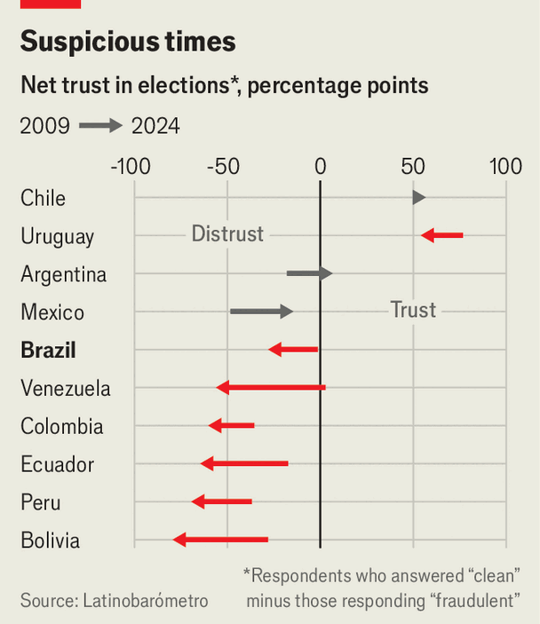
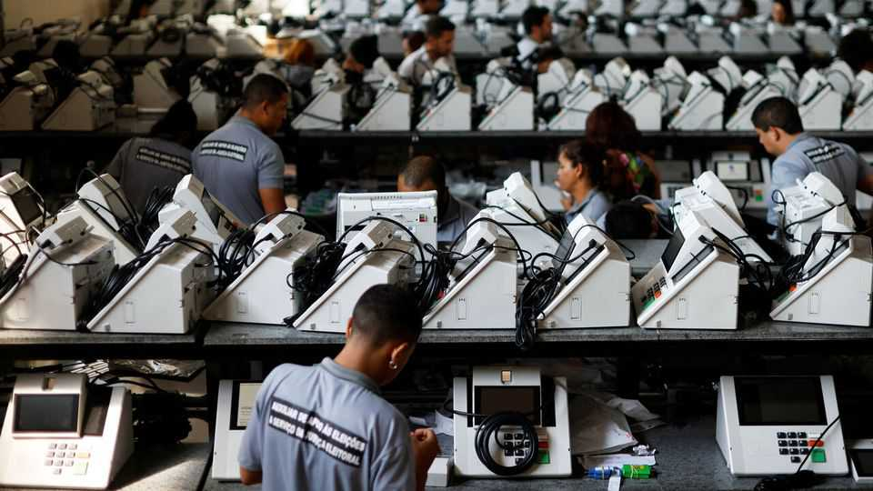

Brazil’s high-tech voting system is losing voters’ trust
Blame social media, populist politicians and falling trust in institutions
June 4th 2026

It is the only country in the world where all elections are entirely electronic. To celebrate the Brazilian system’s 30th anniversary in May, the country’s Superior Electoral Court (TSE), which oversees general elections, launched a mascot, Pilili, a friendly-looking voting machine with big round eyes. Yet Pilili and the court’s extensive outreach to Brazilians have not shored up sagging trust in their voting system.

In 2009 45% of respondents told Latinobarómetro, a pollster, that they believed elections were clean, while 47% said they were crooked. By 2024 just 32% trusted them and 61% suspected fraud (see chart). Views about voting machines have been shifting, too. In a recent poll 43% said they could not be trusted. In a survey by the same firm in 2022 only 22% said they had no confidence in the machines. It was in that year that Jair Bolsonaro, a right-wing populist who lost his campaign for re-election as president, flooded the internet with falsehoods about the machines. Those claims helped inspire an insurrection on January 8th 2023, when thousands stormed government buildings. Mr Bolsonaro is serving a jail sentence for trying to overturn the election result.
He was only Brazil’s most radical manifestation of a declining trust in voting systems seen around the world. His son, Flávio, a senator, is running for president in October. In March, at the Conservative Political Action Conference, a right-wing gathering held this year in Dallas, Flávio claimed he would win if the election was “free and fair”, suggesting any other outcome would show it was not. Many of the other MAGA types present have also stoked false rumours about dodgy voting machines. Though Flávio’s campaign has faltered after leaked messages linking him to a corrupt banker, the Bolsonaro effect lingers: a sizeable share of Brazil’s right is querying the voting machines, particularly on social media. Candidates disputed the general-election results in 2014, 2018 and 2022. If this year’s outcome is tight, the loser may once again cry foul.
Distrust of the electoral system has been spurred by polarisation and online misinformation, not by proven fraud. But its technical nature helps false information about the system to spread. When voters enter a polling booth, the machine identifies them by their fingerprints. They then enter the two-digit ID of their chosen candidate. Votes are not recorded in chronological order, but at random, to preserve ballot secrecy. When polls close, at 5pm, a tally is printed out and hung up in the polling station for the public to see, the only paper record of the vote.
A polling officer then removes the memory sticks from each machine, and sends an encrypted electronic record of the tally to the TSE headquarters over a virtual private network. The software that does this was written by the TSE itself, and uses similar security protocols to bank transactions. Each machine has a unique digital signature for the electronic record transmitted to the TSE. If the signature on a batch of votes does not match the TSE’s records, it will be barred from entering the network. By design, the machines lack the hardware to connect to the internet or bluetooth themselves. The memory sticks also carry a signature, so the machines will reject any that do not match.

“Even if you have one or a few bad-faith actors in the TSE, there are too many layers of security for them to be able to affect the system as a whole, or the vote count,” says Carlos Alberto da Silva, a professor of cryptography at the Federal University of Mato Grosso do Sul. “Over the course of three decades, there has never been any evidence of electoral fraud in the Brazilian voting system,” says Cármen Lúcia, until recently the TSE’s president.
Brazilians know the election outcome within four hours of the polls closing. Voters can verify the result by seeing if the tallies in the polling stations match the electronic voter logs published on the TSE’s website. An independent federal audit office also collects a large sample of paper tallies, comparing them with the electronic tally, then certifies the winner.
Brazil chose to go electronic to beat widespread electoral fraud in the days when politicians’ henchmen often filled in many illiterate voters’ paper ballots in advance. Voter rolls often included dead or fake people. Matters came to a head in 1994, during a blatantly marred election in Rio de Janeiro. Hundreds of ballots were written in the same handwriting. After that, the TSE convened a group of engineers and lawyers to come up with a solution. By 2000 voting was fully electronic.
To boost trust, the TSE organises hackathons in the run-up to the election. Any citizen over 18 can attend, with expenses covered. Participants have access to voting machines’ hardware and software, and can attempt to compromise them. If a vulnerability is found, the TSE fixes it and asks participants back to repeat their attacks. It also lets universities, the army, the federal police, civil-society outfits like Brazil’s bar association and political parties inspect the machines’ source code. Marcos Roberto dos Santos, a cyber-security professor at Atitus, an institute in Rio Grande do Sul, has taken part in the tests four times. “If you have doubts or problems with the system, that’s your right,” he says. “Then go test it for yourself.” After Mr Bolsonaro’s loss in 2022, his party sued to have the results of the run-off annulled—but not those of the first round, in which it took the most seats in Congress.

Yet openness and cryptography have their limits. Trust in Brazil’s courts is falling. In most countries, administrative authorities run elections, while courts try alleged violations separately. Brazil’s TSE runs everything, including voting machines and software. It certifies the results and adjudicates disputes. Its membership overlaps with the Supreme Court, which many Brazilians regard with suspicion.
Alexandre de Moraes, a pugilistic Supreme Court judge, oversaw Mr Bolsonaro’s coup trial. During his tenure on the TSE it fined some who discredited the machines and banned Mr Bolsonaro from office. But the TSE “holds too many roles that could create conflicts of interest”, says Diego Aranha, a Brazilian cyber-security expert at Aarhus University in Denmark. The country is so polarised that “any well-intentioned critic of the system becomes lumped together with bolsonarismo, even if the criticism is technical.”
Some well-meaning critics suggest combining the machines with individual paper receipts, not just the polling stations’ electronic tally, as in India. Brazil’s Congress has repeatedly called for printouts to complement the electronic record, but the TSE has ruled against. In 2002 it ran a pilot in which printers were attached to machines but often jammed; hence, the TSE argued, such malfunctions could delay the count. It also claimed that individual records could compromise the ballot’s secrecy, since gangs or local bigwigs could ask voters for proof of their vote. “In the Brazilian experience, the individual paper receipt has opened the door to coercion and control over voters, which undermines the process’s legitimacy,” says Ms Lúcia.
On May 12th Kassio Nunes Marques, who was appointed by Jair Bolsonaro to the Supreme Court, took charge of the TSE. Of the two other Supreme Court justices on the TSE, one is also a Bolsonaro appointee and the other has become closer to Flávio in recent years. Whereas Mr Moraes was accused of overreach, Mr Nunes Marques has said the TSE will interfere as little as possible this time around. That may assuage the bolsonaristas—for now. ■
Sign up to El Boletín, our subscriber-only newsletter on Latin America, to understand the forces shaping a fascinating and complex region.